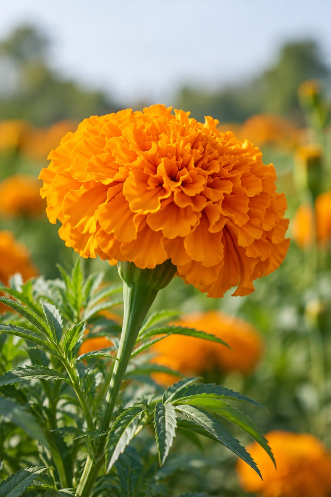
FloraGLO葉黃素
- 原料種類
- 葉黃素
- 來源
- 西班牙-DSM
- 專利紀錄
- 3 花種專利 1 製程專利 1 功效專利 80篇以上臨床
1.屬於食添，須依法規添加及標示
2.粉體: 游離葉黃素10%；油體: 游離葉黃素20%
3.粉體: 橘紅色；油體: 棕橘紅色；不水溶、不建議用於果凍及水劑飲品
AI來源意象，非原廠實拍。
3C GENERATION
依官網資訊表查看3C 世代相關原料品項、來源與規格說明。
COMMON MATERIALS
以下列出此配方方向較常被指定的原料與其形式。實際可用品項、規格與最小採購量，會依配方設計與供應狀況調整。
本分類依百達醫官網資訊表整理；專利與認證資訊為個別原料資料紀錄，不代表百達醫公司資格。實際供貨規格、證明文件、專利有效期限及適用範圍，請洽業務確認。

1.屬於食添，須依法規添加及標示
2.粉體: 游離葉黃素10%；油體: 游離葉黃素20%
3.粉體: 橘紅色；油體: 棕橘紅色；不水溶、不建議用於果凍及水劑飲品
AI來源意象，非原廠實拍。
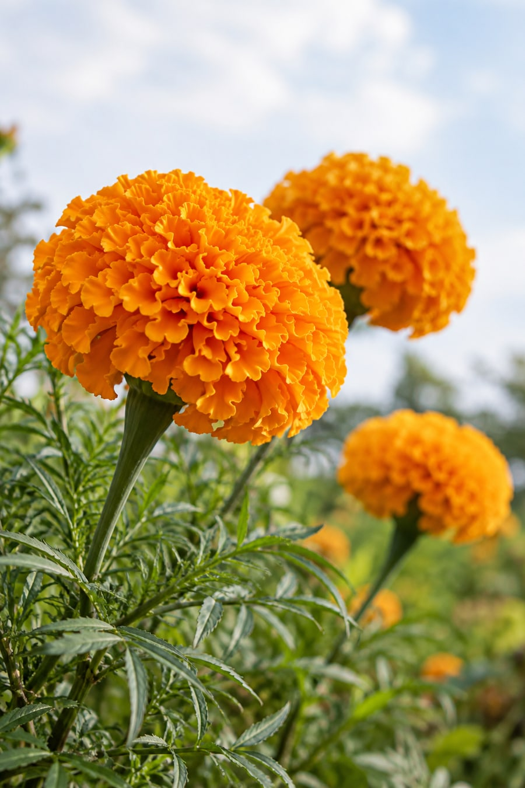
1.符合GMP、HACCP︑OHSAS︑FSSAI︑
ISO、HALAL 、KOSHER認證
2.粉體:游離葉黃素20%)；油體:游離葉黃素20%，玉米黃素4%
3.粉體:橘色，可冷水微水溶；油體:深橘紅色
AI來源意象，非原廠實拍。
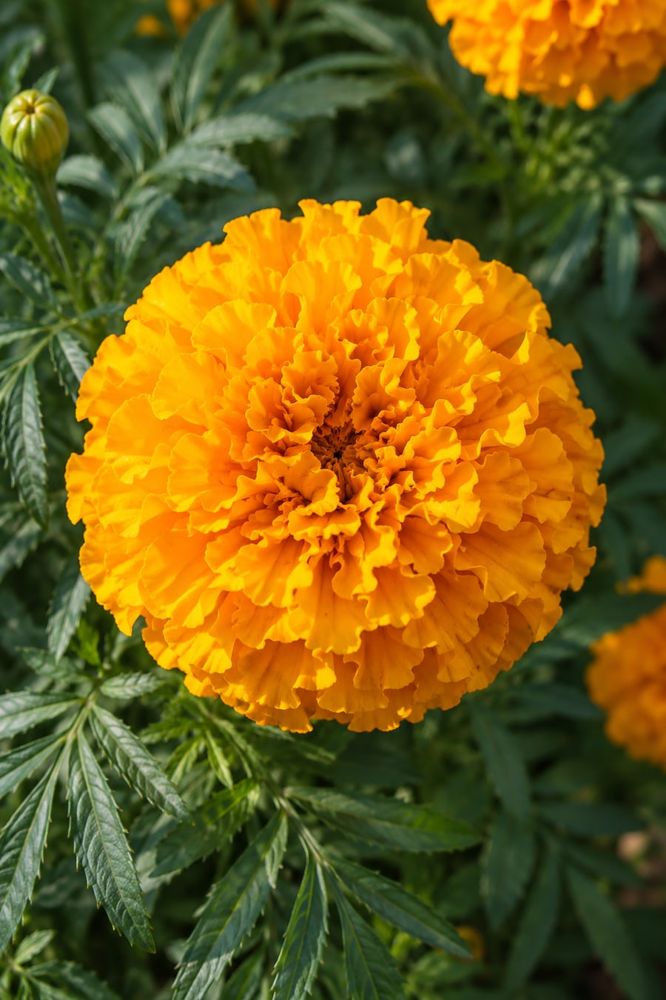
1..符合NSF –GMP、ISO 9001:2008、 HACCP 、KOSHER、HALAL
2.液體 :葉黃素15%，玉米黃素3%
3.液體 :橘紅色；可用於果凍及水劑飲品
AI來源意象，非原廠實拍。
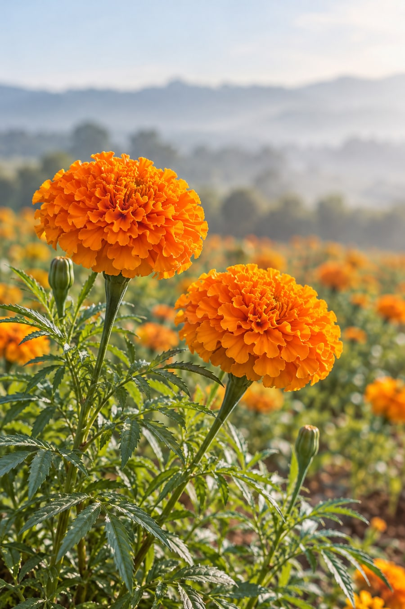
1.符合Kosher, HALAL, BRC, FSMA,GMP認證
2.粉體:游離葉黃素10%、玉米黃素2%
3.橘紅色粉體；特殊製程增強分散性，更多應用的靈活性
AI來源意象，非原廠實拍。
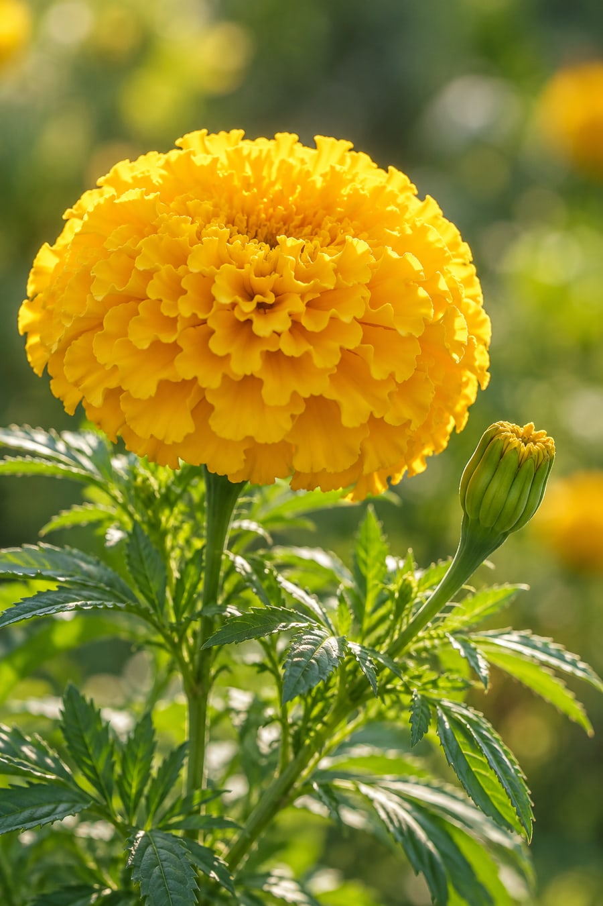
1.符合GMP、ISO9001-2008、HACCP、KOSHER、HALAL
2.粉體:葉黃素20%，玉米黃素4%；油體:葉黃素20%，玉米黃素4%
3.粉體 :橘紅色，冷水可溶；油體 :橘紅色
AI來源意象，非原廠實拍。
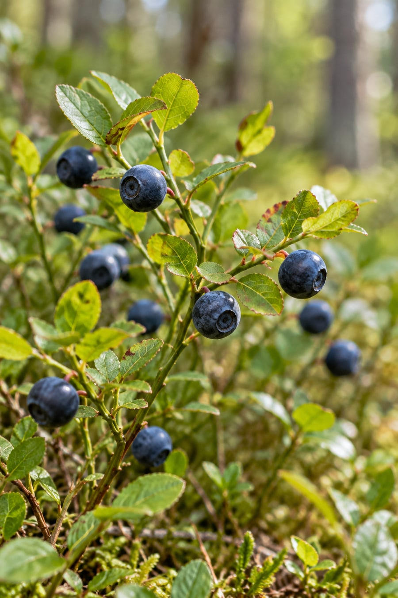
1.植物萃取，原廠文獻發表，具備Halal、Kosher認證
2.花青素≥36%，游離花青素 ≤1%
3.暗紅紫色粉末
4.如需其他規格請聯絡我們
AI來源意象，非原廠實拍。
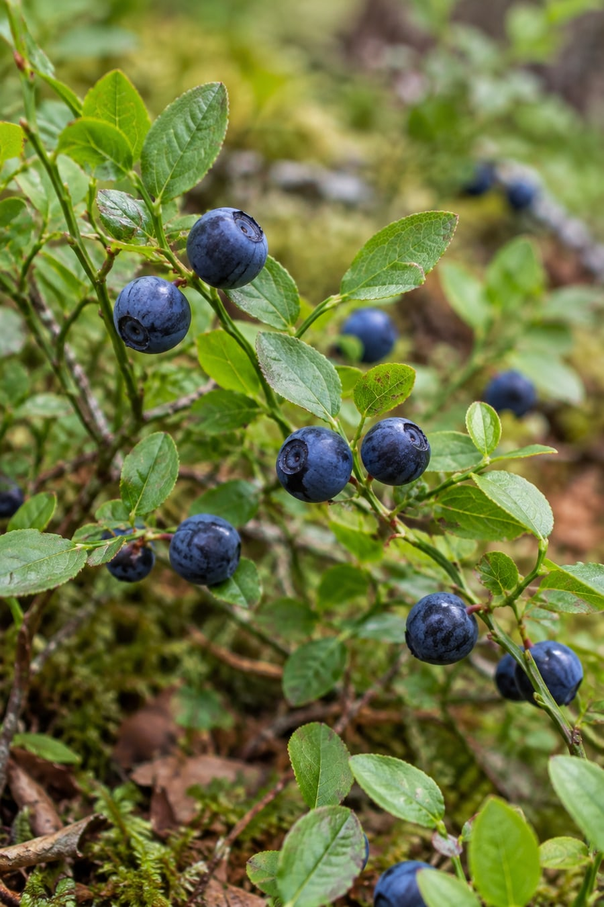
1.植物萃取，無過敏原，具備Halal、Kosher認證
2.總花青素(以 Cyanidin 3-O-glucoside chloride(C3G)計) >= 36%
3.深紫色粉末，可水溶
4.如需其他規格請聯絡我們
AI來源意象，非原廠實拍。
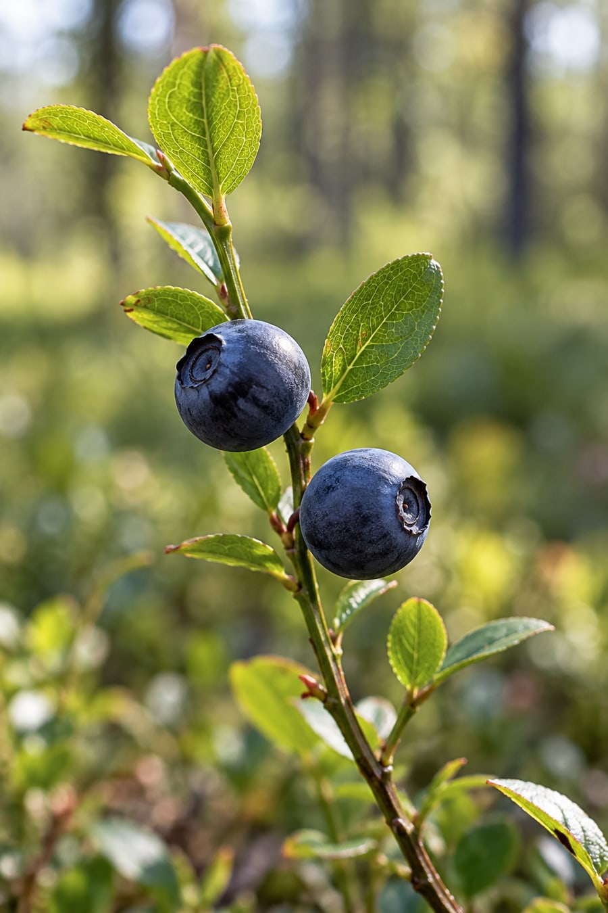
1.30+臨床文獻
2.總花青素 ≧ 36%以上，去糖基花青素 (Anthocyanidin) ≦ 1%
3.黑藍色粉體
4.如需其他規格請聯絡我們
AI來源意象，非原廠實拍。
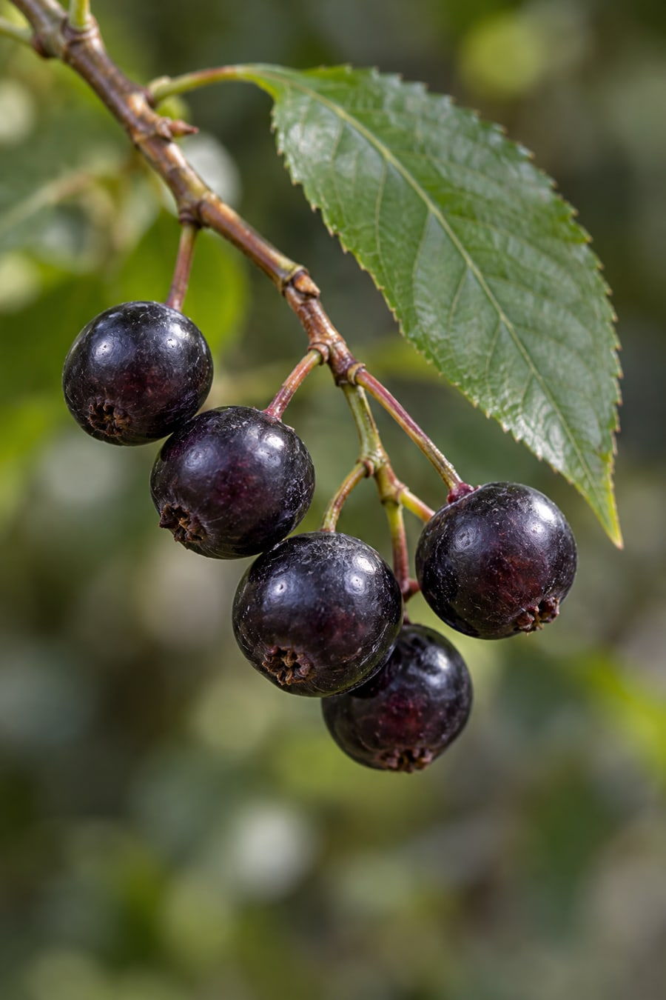
規格資料整理中，請洽詢確認。
AI來源意象，非原廠實拍。
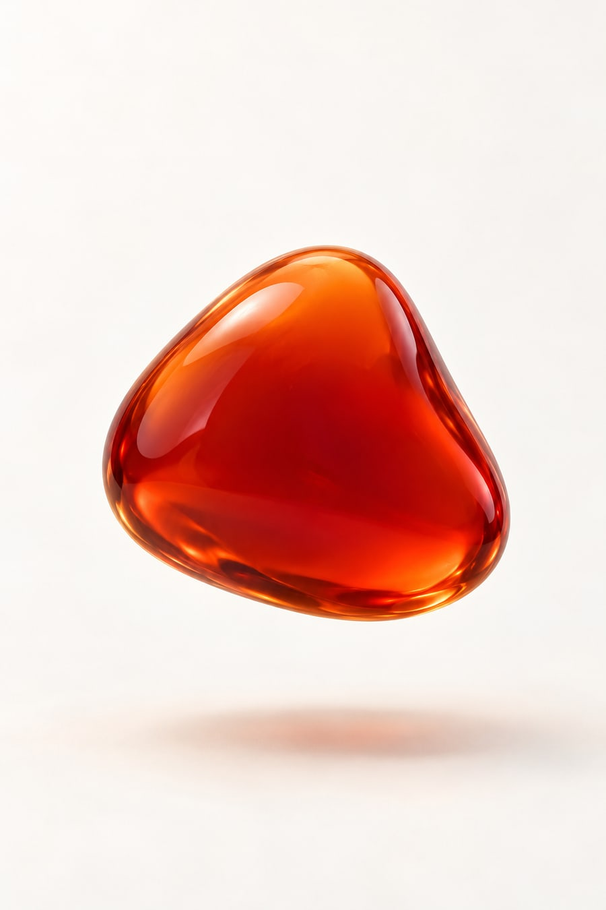
規格資料整理中，請洽詢確認。
AI材質意象，非實際供貨形態。
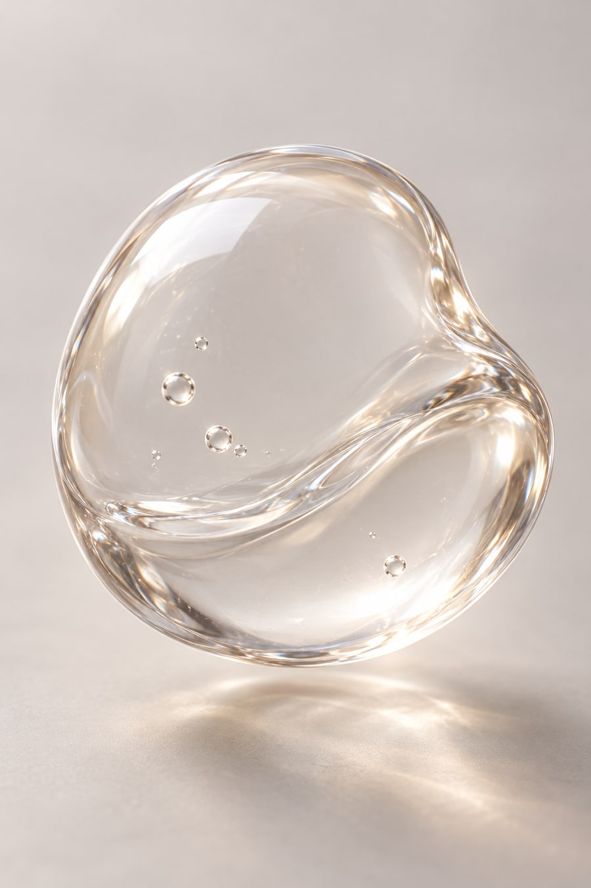
1.多項原廠研究，哈拉問卷
2.純度 >95%
3.白色至淡黃色粉末
AI材質意象，非實際供貨形態。
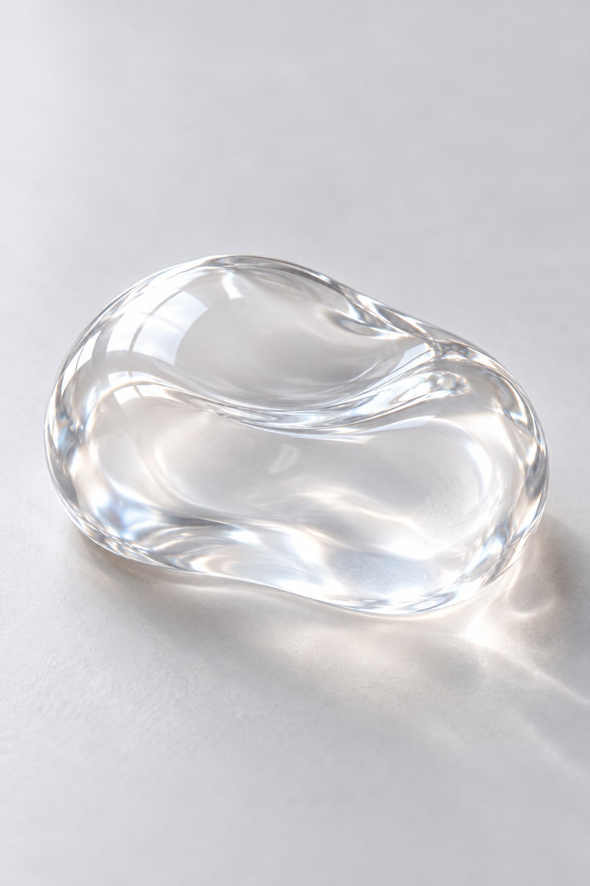
1.具HALAL、KOSHER
2.純度 >95%
3.白色粉末
AI材質意象，非實際供貨形態。
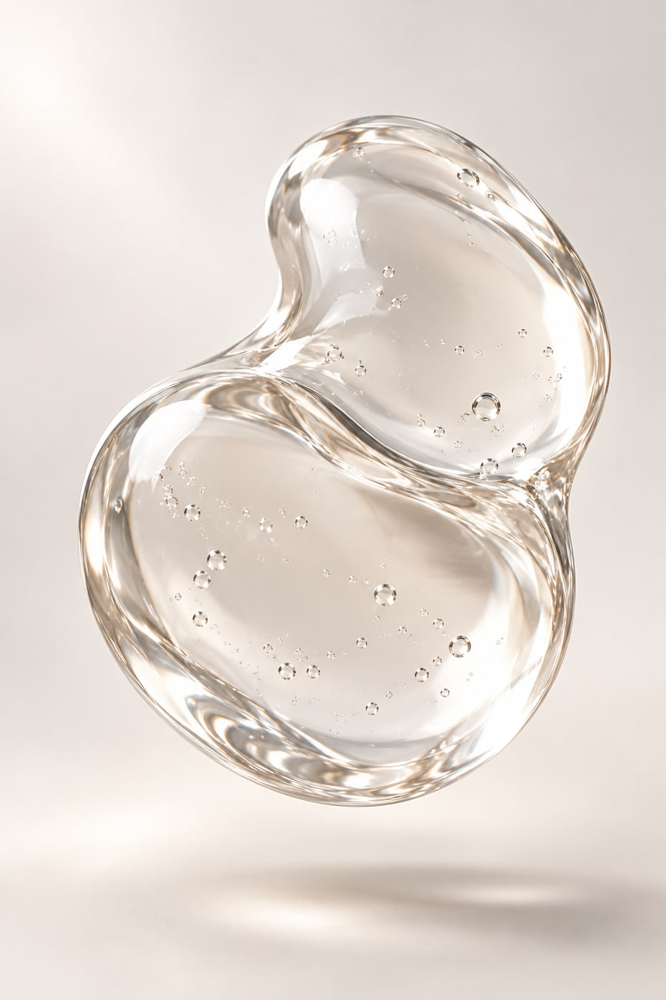
1.多項原廠研究
2.純度 >95%
3.白色粉末微顆粒
AI材質意象，非實際供貨形態。
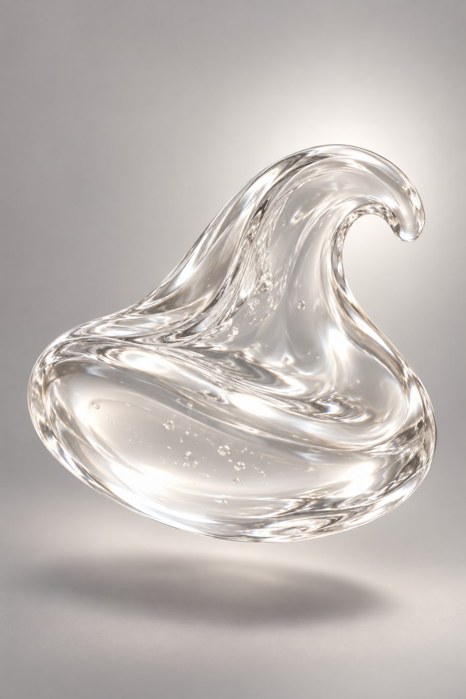
1.多項原廠研究、具HALAL
2.Sodium Hyaluronate ( HA）天然玻尿酸60-75%、Polysaccharides（多醣類）10%、Hydrolized Proteins ( 膠原蛋白 ) 5%
3.白色的吸濕性粉末
AI材質意象，非實際供貨形態。
DISCUSS YOUR FORMULA
提供產品訴求與預計劑型，我們會協助評估原料選項、規格與可行的配方組合。
與研發顧問討論